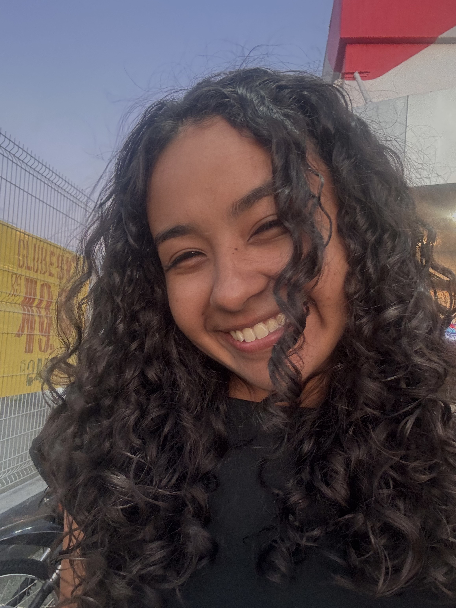

Sobre mim

Oi, eu me chamo Francisca Yasmin, tenho 20 anos e atualmente estou cursando o quinto semestre do curso de Sistema da Informação no UNASP. Gosto de tecnologia desde que terminei o ensino médio, onde tive a oportunidade de aprender sobre programação e pude dar o pontapé inicial na minha carreira como desenvolvedora.
Fiz um técnico também pelo SENAI e durante o curso, tive a oportunidade de me desenvolver ainda mais, aprendi outras tecnologias, pude participar de projetos diferentes podendo me desenvolver melhor na área de computação e tendo a oportunidade de me conhecer melhor atuando nessa área.
Formação
2024 – 2027
Bacharelado em Sistema da Informação
UNASP
2024 – 2025
Aprendiz em Soluções Digitais
ETS - Bosch Campinas
2024 – 2025
Ánalise e Desenvolvimento de Sistema
SENAI Roberto Mange
2020 – 2023
Ensino Médio Integrado com técnico de informática
Instituto Federal Campus Hortolândia